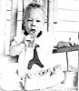

Here's an idea that'll please both you and your toddler!
It never takes a new parent long to discover that, second only to diapers, the most indispensable item of clothing in a baby's wardrobe is the bib! With a protective dickey safely in place at feeding time, the great cleanup battle is half won . . . and a busy adult can save a whole lot of precious time.
Of course, most department stores offer good selections of baby bibs, but they're often skimpy and/or expensive. Moms and dads can improve on the design and give a personal touch to their young one's clothing by combining an old-timey recycling trick with a little imagination. When my son Keith began to get messy at meals, his grandmother made him a delightful, very usable bib . . . and I wasted no time in picking up on the idea!
Grandma's baby-protector was made from a terry-cloth fingertip towel, so it's not only soft and pretty, but much larger than the average baby bib. You can find fingertip towels (the size is somewhere between that of a washcloth and a hand towel) in most bath and linen departments for as low as 89 cents . . . or you can simply cut the appropriate size from an old kitchen or bath towel.
To make the tot napkin, cut a hole-a bit larger in diameter than the baby's head-that starts about 2-1/2 inches from one end of the towel. Rim the opening with a piece of stretchy rib knit (purchased at factory outlets or flea markets . . . or cut some off an old turtleneck) that's just .slightly shorter than the circumference of the hole . . . then fold the knit band back over the terry and stitch it down.
When pulled on over a baby's head, the handmade bib will completely cover endangered clothing and protect the tot's lap and shoulders . . . and you can wash the tiny apron over and over again.
|
 |
|
|